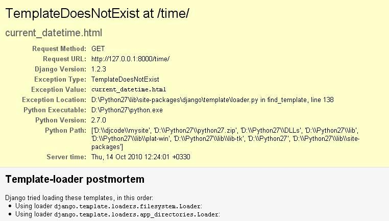

Template ها در جنگو
در فصل گذشته دیدیم که کد HTML را می توانیم به صورت یک متن به طور مستقیم درون view بگنجانیم:
def current_datetime(request):
now = datetime.datetime.now()
html = "<html><body>It is now %s.</body></html>" % now
return HttpResponse(html)
- یکی از معایب روش بالا این است که برای هرگونه اعمال تغییر در طراحی صفحه نیازمند تغییر در کد پایتون می باشیم. می دانیم که طراحی سایت نیازمند تغییرات متعددی است در نتیجه استفاده از این روش موجب تغییر به مراتب بیشتر کد پایتون می باشد. بنابراین مناسب تر آن است که طراحی صفحه و ایجاد تغییرات در آن، نیازی به اصلاح و تغییر کد پایتون نداشته باشد.
- نوشتن کد پایتون و طراحی HTML دو موضوع متفاوت از یکدیگر بوده و نظم و قانون مربوط به خود را دارند، و بیشتر محیط های توسعه ی وب حرفه ای این مسئولیت ها را جدا کرده و به افراد جدا (حتی به بخش و حوزه ی جدا) واگذار می کنند. طراحان و کد نویسان HTML/CSS نباید نیاز به ویرایش کد پایتون برای کار خود داشته باشند.
- اگر طراحان بتوانند بر روی کدهای html در همان زمان که برنامه نویسان در حال کار با کدهای پایتون هستند، کار کنند. بهترین بهره وری از کار را خواهیم داشت زیرا دیگر نیازی نیست که یک فرد منتظر تمام کردن کد توسط فردی دیگر باشد چرا که در یک فایل کد HTML و کد پایتون هر دو به صورت جداگانه وجود دارد.
این حالت را (که کد HTML به طور مستقیم درون view قرار بگیرد) به اصطلاح hard-code می نامند، بدین معنا که کد HTML به صورت غیر مستقل داخل کد پایتون قرار دارد و تغییر آن کار ساده ای نخواهد بود.
اگرچه تکنیک فوق برای توضیح و یا شرح نحوه ی کارکرد view در فصل قبلی مناسب به نظر می آید، اما به دلایل ذکر شده در بالا این ایده ی خوبی نیست که کد HTML به صورت hard-code به طور مستقیم درون view قرار گیرد.
همانطور که ذکر کردیم جدا کردن طراحی صفحه از کد پایتون مربوط به آن بسیار واضح و منطقی است. با استفاده از سیستم template جنگو می توانیم کدهای مربوط به HTML را از کد پایتون جداسازی کنیم، که در این فصل به این موضوع خواهیم پرداخت.
قواعد Template System
template جنگو یک رشته ای از متن می باشد که برای جدا کردن نمایش یک سند از داده ی خود در نظر گرفته شده است. قالب حفره ها و تکه کدهای (تگ های template) مختلفی را تعریف می کند که نحوه ای که سند باید نمایش داده شود را تنظیم می کند. به طور معمول template ها برای تولید HTML استفاده می شوند، اما template های جنگو به همان اندازه در تولید هر فرمت متنی توانا هستند.
بیایید با یک مثال ساده شروع کرده و آن را مورد بررسی قرار دهیم:
<html>
<head><title>Ordering notice</title></head>
<body>
<h1>Ordering notice</h1>
<p>Dear {{ person_name }},</p>
<p>Thanks for placing an order from {{ company }}. It's scheduled to
ship on {{ ship_date|date:"F j, Y" }}.</p>
<p>Here are the items you've ordered:</p>
<ul>
{% for item in item_list %}
<li>{{ item }}</li>
{% endfor %}
</ul>
{% if ordered_warranty %}
<p>Your warranty information will be included in the packaging.</p>
{% else %}
<p>You didn't order a warranty, so you're on your own when
the products inevitably stop working.</p>
{% endif %}
<p>Sincerely,<br />{{ company }}</p>
</body>
</html>
template فوق یک HTML بنیادی با برخی متغیرها و تگ های template استفاده شده در آن می باشد. بیایید template فوق را مورد بررسی قرار دهیم.
- هر متنی که داخل دو آکولاد قرار گرفته باشد (مانند {{ person_name }}) یک متغیر است. این بدین معنی می باشد که "مقدار ارزش متغیر با نام داده شده را درج کند" به عبارت دیگر اگر (person_name) داخل آکولاد قرار نگیرد خروجی Dear person_name را درج خواهد کرد و نام شخص را به ما نشان نمی دهد. (چطور ارزش متغیرها را می توان تعیین کرد؟ در این فصل خواهید فهمید.)
- هر متنی که داخل یک آکولاد و علامت درصد قرار بگیرد (مانند {% if ordered_warranty %}) یک تگ template می باشد. تعریف یک تگ بسیار وسیع می باشد: تگ به template می گوید که "کاری را انجام بده".
- نهایتا، پاراگراف دوم template فوق حاوی یک مثال از filter می باشد، که مناسب ترین روش برای تغییر قالب بندی (formatting) یک متغیر می باشد. در این مثال، {{ ship_date|date:"F j, Y" }}، متغیر ship_date به فیلتر date ارسال شده، و آرگومان "F j, Y" نیز به فیلتر date داده شده است. فیلتر date تاریخ را بر اساس آرگومان تغیین شده قالب بندی می کند. فیلترها با استفاده از علامت (|) مربوط می شوند، همانند کاربرد آن در یونیکس.
مثال template فوق حاوی یک تگ for ({% for item in item_list %}) و یک تگ if ({% if ordered_warranty %}) می باشد.
تگ for بسیار شبیه به عبارت for در پایتون می باشد، که به ما اجازه می دهد درون سرتاسر آیتم های یک لیست به ترتیب بگردید و یا تغییراتی را بر روی همه یا یک سری از آیتم ها اعمال کنیم. تگ if همانطور که انتظار آن می رود، به صورت یک عبارت if منطقی عمل می کند. در این مورد خاص، تگ مورد نظر بررسی می کند که آیا ارزش متغیر ordered_warranty ،True می باشد یا خیر. اگر بدین صورت بود یعنی اگر مقدار آن True بود، سیستم template جنگو هر آنچه که بین {% if ordered_warranty %} و {% else %} باشد را نمایش خواهد داد، در غیر اینصورت سیستم template جنگو هر آنچه را که بین {% else %} و {% endif %} باشد را نمایش خواهد داد. توجه داشته باشید که تک {% else %} کاملا اختیاری می باشد.
هر قالب جنگو به چندین تگ و فیلتر داخلی (built-in) دسترسی دارد، تعدادی از آن ها در ادامه فصل های کتاب مورد بحث قرار خواهند گرفت. همچنین این امکان وجود دارد که فیلتر و تگ برای خودتان ایجاد کنید؛ که در فصل نهم این کتاب بیان خواهد شد.
استفاده از template جنگو
بیایید وارد بحث template جنگو شویم، تا شما نحوه ی کارکرد آن را مشاهده کنید، ولی هنوز نمی خواهیم قالب جنگو را با view هایی که در فصل گذشته ساخته شد به هم مرتبط کنیم. هدف در اینجا این است که با نحوه ی کار template جنگو، مستقل از دیگر بخش ها آشنا شوید. (به عبارت دیگر: به طور معمول شما template جنگو را همراه با یک view استفاده خواهید کرد، ولی می خواهیم این موضوع را روشن کنیم که template جنگو تنها کتابخانه ی پایتون می باشد که شما می توانید آن را در هرجایی استفاده کنید، نه فقط در view های جنگو.)
در اینجا ابتدایی ترین راه که می تونید قالب جنگو را در کد پایتون استفاده کنید آمده است:
ساختن آبجکت Template از طریق ایجاد کد قالب به صورت رشته.
فراخوانی متد render() از آبجکت Template با دادن یک مجموعه ای از متغیرها (the context). این متد قالب را به صورت رشته ی کامل با تمام متغیرها و تگ های قالب بر می گرداند.
به کد زیر توجه کنید:
>>> from django import template
>>> t = template.Template('My name is {{ name }}.')
>>> c = template.Context({'name': 'Adrian'})
>>> print t.render(c)
My name is Adrian.
>>> c = template.Context({'name': 'Fred'})
>>> print t.render(c)
My name is Fred.
در بخش بعدی جزئیات هر خط از کد بالا شرح داده خواهد شد.
ساختن آبجکت های template
ساده ترین راه برای ساختن آبجکت Template به طور مستقیم به عنوان نمونه ذکر کردن آن می باشد. کلاس Template درون ماژول django.template می باشد و سازنده ی (cunstructor) آن یک آرگومان دریافت می کند که کد خام template می باشد. بیایید نمونه آن را درون interactive interpreter پایتون مشاهده کنیم.
درون دایرکتوری mysite ساخته شده توسط دستور django-admin.py startproject (بیان شده در فصل دوم)، دستور python manage.py shell را تایپ کرده و interactive interpreter را باز کنید.
|
|
خط فرمان ویژه ی پایتوندر صورتیکه در گذشته از پایتون استفاده کرده باشید، ممکن است متعجب شوید که چرا بجای فرمان python، از فرمان python manage.py shell استفاده شده است. هر دو فرمان باعث باز شدن interactive interpreter خواهد شد، با این تفاوت که دستور manage.py shell قبل از آغاز شدن interpreter، به جنگو اعلام می کند که از کدام فایل تنظیمات استفاده کند. بسیاری از قسمت ها در جنگو، حاوی سیستم template می باشد، که شما قادر به استفاده از آن ها نخواهید بود مگر آنکه فریم ورک بداند از کدام تنظیمات استفاده کند. اگر در مورد نحوه ی انجام کار فوق کنجکاو هستید، در اینجا توضیح نحوه ی عملکرد آن در پشت صحنه، وجود دارد. جنگو به دنبال یک متغیر محیطی با نام DJANGO_SETTINGS_MODULE می گردد که باید در مسیر import فایل settings.py شما قرار گرفته باشد. به عنوان مثال، با فرض اینکه mysite مسیر پایتون شما می باشد، DJANGO_SETTINGS_MODULE ممکن است در 'mysite.settings'، قرار گرفته باشد. هنگامی که شما فرمان python manage.py shell را اجرا می کنید، فرمان مذکور به DJANGO_SETTINGS_MODULE توجه می کند. شما را تشویق می کنیم برای به حداقل رساندن پیچیدگی و تنظیماتی که باید انجام دهید از python manage.py shell در این مثال ها استفاده کنید هنگامی که با جنگو بیشتر آشنا شوید، احتمالا استفاده از manage.py shell را کنار گذاشته و خودتان به صورت دستی DJANGO_SETTINGS_MODULE را در .bash_profile یا محیط های دیگر تنظیم خواهید داد. |
اجازه دهید با اصول اولیه سیستم template جنگو آشنا شویم:
>>> from django.template import Template
>>> t = Template('My name is {{ name }}.')
>>> print t
با وارد کردن کد فوق، چیزی شبیه به این مشاهده خواهید کرد:
<django.template.Template object at 0xb7d5f24c>
عبارت 0xb7d5f24c هویت آبجکت پایتون می باشد که در هر زمان متفاوت می باشد واز حیطه بحث ما خارج می باشد.
هنگامی که یک آبجکت Template ایجاد می کنید، سیستم template جنگو کد template را به صورت داخلی کامپایل می کند، و شکل بهینه آن برای ارائه دادن (rendering) آماده می شود، اما در صورتیکه کد template شما دارای اشکال باشد، فراخوانی Template() موجب بروز خطا خواهد شد:
>>> from django.template import Template
>>> t = Template('{% notatag %}')
Traceback (most recent call last):
File "<stdin>", line 1, in ?
...
django.template.TemplateSyntaxError: Invalid block tag: 'notatag'
در موارد زیر خطای TemplateSyntaxError رخ خواهد داد:
- تگ های نا معتبر
- آرگومان های نا معتبر درون تگ های معتبر
- فیلترهای نا معتبر
- آرگومان های نا معتبر درون فیلترهای معتبر
- کد template نا معتبر
- تگ های بسته نشده (تگ های for باید بسته شوند)
ارائه دادن (rendering) یک Template
هنگامی که شما یک آبجکت Template دارید، می توانید از طریق یک context به آن داده ارسال کنید. context مجموعه ای از نام متغیرهای template و ارزش های آن ها می باشد. Template با استفاده از context متغیرهای خودش را با ارزش مورد نظر جایگزین کرده و تگ ها را نیز اجرا می کند.
context با کلاس Context در جنگو نشان داده می شود، که درون ماژول django.template قرار دارد. سازنده ی آن یک آرگومان اختیاری دریافت می کند: یک دیکشنری نام های متغیر و ارزش های آن. برای پر کردن template متد render() آبجکت Template را با context فراخوانی می کنیم:
>>> from django.template import Context, Template
>>> t = Template('My name is {{ name }}.')
>>> c = Context({'name': 'Stephane'})
>>> t.render(c)
u'My name is Stephane.'
نکته ای که باید در اینجا اشاره کنیم این است که مقدار برگشتی (t.render(c یک رشته ی معمولی پایتون نمی باشد، بلکه یک آبجکت یونیکد است. که با نمایش حرف u در ابتدای آن نشان داده می شود. جنگو در سراسر فریم ورک به جای رشته ی معمولی پایتون از آبجکت های یونیکد استفاده می کند. پشتیبانی یونیکد جنگو نسبتااز طیف گسترده ای از حروف برای برنامه های شما بدون زحمت و دردسر پشتیبانی می کند.
|
|
دیکشنری ها و context هادیکشنری پایتون یک رابطه ی بین کلید ها و ارزش های متغیر می باشد. یک context همانند یک دیکشنری می باشد، با این تفاوت که حالت تابعی به خود گرفته است و در فصل نهم مورد بحث قرار خواهد گرفت. |
نام متغیرها باید با حروف الفبای انگلیسی شروع شوند (A-Z or a-z) و می توانند حاوی حروف الفبا، عدد، خط تیره (_) و نقطه باشند (نقطه ها مورد ویژه ای هستند که بعدا راجع به آن صحبت خواهیم کرد.)، همچنین نام متغیرها به حروف کوچک و بزرگ حساس می باشند.
در اینجا یک مثال از کامپایل template و rendering آن شبیه به مثالی که در ابتدای فصل مشاهده کردید وجود دارد،
>>> from django.template import Template, Context
>>> raw_template = """<p>Dear {{ person_name }},</p>
...
... <p>Thanks for placing an order from {{ company }}. It's scheduled to
... ship on {{ ship_date|date:"F j, Y" }}.</p>
...
... {% if ordered_warranty %}
... <p>Your warranty information will be included in the packaging.</p>
... {% else %}
... <p>You didn't order a warranty, so you're on your own when
... the products inevitably stop working.</p>
... {% endif %}
...
... <p>Sincerely,<br />{{ company }}</p>"""
>>> t = Template(raw_template)
>>> import datetime
>>> c = Context({'person_name': 'John Smith',
... 'company': 'Outdoor Equipment',
... 'ship_date': datetime.date(2009, 4, 2),
... 'ordered_warranty': False})
>>> t.render(c)
u"<p>Dear John Smith,</p>\n\n<p>Thanks for placing an order from Outdoor
Equipment. It's scheduled to\nship on April 2, 2009.</p>\n\n\n<p>You
didn't order a warranty, so you're on your own when\nthe products
inevitably stop working.</p>\n\n\n<p>Sincerely,<br />Outdoor Equipment
</p>"
اجازه دهید کد فوق را مورد بررسی قرار دهیم:
- در ابتدا کلاس های Template و Context از ماژول django.template به درون برنامه import شده اند.
- متن خام template درون متغیر raw_template ذخیره شده است. باید توجه داشته باشیم که در رشته های معمولی تنها می توان از یک خط استفاده کرد. واگر بخواهیم از رشته های چند خطی استفاده کنیم بایستی از علامت (" " ") برای رشته ی مورد نظر استفاده کنیم.
- در قدم بعدی، یک آبجکت template به نام t ساخته شده و رشته ی raw_template به سازنده ی آن ارسال شده است.
- ماژول datetime از کتابخانه ی استاندارد پایتون درون برنامه import شده است، چرا که در ادامه ی کار مورد استفاده قرار خواهد گرفت.
- یک آبجکت context به نام c ساخته شده است، سازنده ی context یک دیکشنری پایتون دریافت می کند که نام های متغیرها را با ارزش ها مرتبط می سازد. برای مثال در اینجا person_name به 'John Smith'، company به 'Outdoor Equipment'، و غیره مرتبط شده است.
- در نهایت، متد render() از آبجکت template فراخوانی شده، و context به آن ارسال شده است. این متد یک template قابل ارائه را بر می گرداند، بدین معنی که تمام متغیرها با ارزش و مقدار واقعی جایگزین شده و تمام تگ های template اجرا شده اند.
توجه داشته باشید که پاراگراف "You didn't order a warranty" نمایش داده می شود چرا که متغیر ordered_warranty به صورت False ارزیابی شده است. همچنین توجه کنید تاریخ April 2, 2009 به حالت آن قالب بندی که برای آن مشخص شده است نمایش داده شده است (F j, Y).
در صورتیکه تازه با زبان برنامه نویسی پایتون آشنا شده باشید، ممکن است تعجب کنید که رشته ی خروجی به رفتن به خط بعد حرف (n\) را نمایش می دهد. دلیل زیرکی interactive interpreter پایتون می باشد: فراخوانی (t.render(c یک رشته بر می گرداند، و interactive interpreter به صورت پیشفرض به جای شکل چاپی رشته شکل نمایشی آن را نشان می دهد. در صورتیکه می خواهید رشته با حالت چاپی نمایش داده شود، یعنی بجای حرف (n\) رشته به خط بعد برود، می توانید از عبارت print استفاده کنید: (print t.render(c.
مسائل فوق اصول استفاده از template system جنگو می باشد: نوشتن یک رشته ی template، ساختن آبجکت Template، ساختن Context و فراخوانی متد render().
Context های چندگانه در یک Template
با یک آبجکت Template می توانید چندین context را ارائه دهید. برای مثال:
>>> from django.template import Template, Context
>>> t = Template('Hello, {{ name }}')
>>> print t.render(Context({'name': 'John'}))
Hello, John
>>> print t.render(Context({'name': 'Julie'}))
Hello, Julie
>>> print t.render(Context({'name': 'Pat'}))
Hello, Pat
هر گاه مانند مثال فوق از template همسان برای چندین context استفاده می کنید ، بسیار بهینه تر می باشد اگر یک مرتبه یک آبجکت Template ساخته و سپس متد render() را برای چند بار فراخوانی کنید:
# Bad
for name in ('John', 'Julie', 'Pat'):
t = Template('Hello, {{ name }}')
print t.render(Context({'name': name}))
# Good
t = Template('Hello, {{ name }}')
for name in ('John', 'Julie', 'Pat'):
print t.render(Context({'name': name}))
تجزیه ی template جنگو کاملا سریع می باشد. در پشت صحنه بیشترین تجزیه در جنگو از طریق فراخوانی یک regular expression می باشد. این متضاد با موتور های template ای می باشد که پایه اساس آنها XML باشد، چرا که بسیار کند تر از موتور template جنگو می باشند.
متغیرهای دیگر قابل ارسال به Context
مثال های آورده شده تاکنون، یک مقدار ساده را به context ها ارسال کرده اند که به غیر مثال datetime.date غالبا رشته بوده اند. در صورتی که template system جنگو با ظرافت خاصی تعداد بیشتری از داده های با ساختار پیچیده را مانند لیست ها، دیکشنری ها و آبجکت های ساخته شده را نیز کنترل می کند.
کلید گذشتن از داده های با ساختار پیچیده در template های جنگو حرف نقطه ( . ) می باشد، با استفاده از نقطه می توان به کلیدهای دیکشنری، attribute ها، متد ها و اندیس های یک آبجکت نیز دسترسی داشت.
بهترین توضیح استفاده از چند مثال می باشد. برای نمونه، فرض کنید شما یک دیکشنری پایتون را به یک template ارسال کرده اید. برای دسترسی به مقادیر دیکشنری مورد نظر با کلید دیکشنری از یک نقطه استفاده کنید:
>>> from django.template import Template, Context
>>> person = {'name': 'Sally', 'age': '43'}
>>> t = Template('{{ person.name }} is {{ person.age }} years old.')
>>> c = Context({'person': person})
>>> t.render(c)
u'Sally is 43 years old.'
به طور مشابه، نقطه ها همچنین اجازه می دهند به attribute های آبجکت نیز دسترسی پیدا کنید. برای مثال، آبجکت datetime.date پایتون دارای attribute های year، month و day می باشد، می توان با استفاده از یک نقطه به attribute های آن در template جنگو دسترسی پیدا کرد:
>>> from django.template import Template, Context
>>> import datetime
>>> d = datetime.date(1993, 5, 2)
>>> d.year
1993
>>> d.month
5
>>> d.day
2
>>> t = Template('The month is {{ date.month }} and the year is {{ date.year }}.')
>>> c = Context({'date': d})
>>> t.render(c)
u'The month is 5 and the year is 1993.'
در مثال زیر از یک کلاس ساخته شده استفاده شده است که نشان می دهد از نقطه ها می توان جهت دسترسی به آبجکت های دلخواه نیز استفاده کرد:
>>> from django.template import Template, Context
>>> class Person(object):
... def __init__(self, first_name, last_name):
... self.first_name, self.last_name = first_name, last_name
>>> t = Template('Hello, {{ person.first_name }} {{ person.last_name }}.')
>>> c = Context({'person': Person('John', 'Smith')})
>>> t.render(c)
u'Hello, John Smith.'
از طریق نقطه ها همچنین می توانند به متدهای درون یک آبجکت نیز دسترسی پیدا کرد. برای مثال هر رشته ی پایتون، دارای متدهای upper() و isdigit() می باشد، و می توان آن ها را در template جنگو فراخوانی و استفاده کرد:
>>> from django.template import Template, Context
>>> t = Template('{{ var }} -- {{ var.upper }} -- {{ var.isdigit }}')
>>> t.render(Context({'var': 'hello'}))
u'hello -- HELLO -- False'
>>> t.render(Context({'var': '123'}))
u'123 -- 123 -- True'
توجه داشته باشید که پرانتزهای مربوط به متدها را در template نباید به کار برد. همچنین نمی توان به متدها آرگومان ارسال کرد؛ شما می توانید تنها متدهایی را فراخوانی کنید که هیچ آرگومانی دریافت نمی کنند. (کمی بعد در این فصل این فلسفه توضیح داده خواهد شد.)
همچنین نقطه ها برای دسترسی به اندیس های لیست نیز استفاده می شوند، برای مثال:
>>> from django.template import Template, Context
>>> t = Template('Item 2 is {{ items.2 }}.')
>>> c = Context({'items': ['apples', 'bananas', 'carrots']})
>>> t.render(c)
u'Item 2 is carrots.'
اندیس های منفی لیست را در template نمی توان استفاده کرد، برای مثال، متغیر {{ items.-1 }} موجب بروز خطای TemplateSyntaxError خواهد شد.
|
|
لیست های پایتونیادآوری: لیست های پایتون با اندیس صفر شروع می شوند، بدین معنی که اولین اندیس صفر، دومین اندیس یک و به همین ترتیب ادامه خواهد داشت. |
کاربرد نقطه ها در template را می توان بدین شکل خلاصه کرد: هنگامی که template system با یک نقطه در مقابل نام یک متغیر برخورد می کند، به دنبال مسائل زیر جستجو خواهد کرد:
- دیکشنری (مانند foo["bar"])
- attribute (مانند foo.bar)
- فراخوانی متد (مانند foo.bar())
- اندیس لیست (مانند foo[2])
نقطه ها می توانند به صورت تودرتو نیز استفاده شوند. به عنوان نمونه،مثال زیر از عبارت {{ person.name.upper }} استفاده کرده است که ابتدا درون یک دیکشنری به جستجو می پردازد (person['name']) سپس یک متد را فراخوانی می کند (upper()):
>>> from django.template import Template, Context
>>> person = {'name': 'Sally', 'age': '43'}
>>> t = Template('{{ person.name.upper }} is {{ person.age }} years old.')
>>> c = Context({'person': person})
>>> t.render(c)
u'SALLY is 43 years old.'
فراخوانی متد و رفتار آن
فراخوانی متد کمی پیچیده تر از دیگر انواع جستجو می باشد. در زیر مواردی که باید به خاطر داشته باشیم بیان شده است:
- اگر در طی فراخوانی متد، یک متد خطایی تولید کرد، آن خطا اعمال خواهد شد مگر آنکه کلاس آن خطا دارای attribute ای به نام silent‑variable‑failure با مقدار True باشد. در صورتیکه کلاس خطا دارای attribute مورد نظر باشد، متغیر درون template مقدار خالی را نشان خواهد داد، به عنوان مثال:
>>> t = Template("My name is {{ person.first_name }}.")
>>> class PersonClass3:
... def first_name(self):
... raise AssertionError, "foo"
>>> p = PersonClass3()
>>> t.render(Context({"person": p}))
Traceback (most recent call last):
...
AssertionError: foo
>>> class SilentAssertionError(AssertionError):
... silent_variable_failure = True
>>> class PersonClass4:
... def first_name(self):
... raise SilentAssertionError
>>> p = PersonClass4()
>>> t.render(Context({"person": p}))
u'My name is .'
به عنوان نمونه، فرض کنید شما یک آبجکت BankAccount دارید که دارای یک متد delete() می باشد. اگر یک template حاوی چیزی شبیه به این باشد {{ account.delete }}، در صورتیکه account آبجکت BankAccount باشد، هنگام ارائه template آبجکت مورد نظر حذف خواهد شد!
برای جلوگیری از این موضوع، باید بدین شکل عمل کرد:
def delete(self):
# Delete the account
delete.alters_data = True
template system هر متدی که با روش فوق مشخص شده باشد را اجرا نخواهد کرد. در مثال فوق، اگر یک template حاوی {{ account.delete }} باشد و متد delete() دارای alter_data=True باشد، در این صورت متد delete() هنگام ارائه ی template اجرا نخواهد شد و بجای آن، بی صدا رد خواهد شد.
نحوه ی کنترل متغیرهای نا معتبر
به صورت پیشفرض، اگر یک متغیر وجود نداشته باشد، template system آن را به صورت یک رشته ی خالی ارائه می دهد. به عنوان مثال:
>>> from django.template import Template, Context
>>> t = Template('Your name is {{ name }}.')
>>> t.render(Context())
u'Your name is .'
>>> t.render(Context({'var': 'hello'}))
u'Your name is .'
>>> t.render(Context({'NAME': 'hello'}))
u'Your name is .'
>>> t.render(Context({'Name': 'hello'}))
u'Your name is .'
سیستم template بجای بروز خطا، آرام از کنار آن می گذرد. در صورت بروز خطا در این مورد برنامه به دلیل مچ نبودن حروف بزرگ و کوچک از روال عادی خارج می شود، در دنیای واقعی، برای یک وب سایت غیر قابل قبول است که به دلیل یک خطای نوشتاری در یک template کوچک همه چیز غیر قابل دسترس شده و برنامه متوقف شود.
بازی با آبجکت های Context
در اغلب مواقع، آبجکت های Context را با ارسال داده ی دیکشنری به آن تعریف می کنند. می توان ایتم های آبجکت Context را بعد از تعریف نیز مانند دیکشنری استاندارد پایتون حذف یا اضافه کرد:
>>> from django.template import Context
>>> c = Context({"foo": "bar"})
>>> c['foo']
'bar'
>>> del c['foo']
>>> c['foo']
Traceback (most recent call last):
...
KeyError: 'foo'
>>> c['newvariable'] = 'hello'
>>> c['newvariable']
'hello'
تگ ها و فیلترهای اولیه ی Template
همانطور که گفته شد، سیستم template جنگو تعدادی تگ ها و فیلترهای داخلی را با خود حمل می کند. در این بخش خلاصه ای از متداول ترین تگ ها و فیلترها را مورد بررسی قرار خواهیم داد.
تگ if/else
تگ {% if %} یک متغیر را مورد ارزیابی قرار می دهد، و در صورتی که مقدار متغیر True (مانند وجود داشتن، خالی نبودن، و مقدار False نبودن) بود، سیستم template جنگو هر آنچه را که بین تگ {% if %} و {% endif %} باشد را نمایش خواهد داد، مانند:
{% if today_is_weekend %}
<p>Welcome to the weekend!</p>
{% endif %}
استفاده از یک تگ {% else %} اختیاری می باشد:
{% if today_is_weekend %}
<p>Welcome to the weekend!</p>
{% else %}
<p>Get back to work.</p>
{% endif %}
|
|
مقدار True و False در پایتوندر پایتون و template system جنگو آبجکت های زیر به منزله ی False تلقی می شوند:
به غیر از موارد فوق همه چیز True ارزیابی می شود. |
تگ {% if %} عبارات and، or و not را برای آزمودن چندین متغیر، یا منفی کردن متغیر داده شده قبول می کند. به عنوان مثال:
{% if athlete_list and coach_list %}
Both athletes and coaches are available.
{% endif %}
{% if not athlete_list %}
There are no athletes.
{% endif %}
{% if athlete_list or coach_list %}
There are some athletes or some coaches.
{% endif %}
{% if not athlete_list or coach_list %}
There are no athletes or there are some coaches.
{% endif %}
{% if athlete_list and not coach_list %}
There are some athletes and absolutely no coaches.
{% endif %}
تگ های {% if %} اجازه ی نمی دهند عبارات and و or در یک تگ همسان استفاده شوند، دلیل آن است که ترتیب محاسبه ی آن ها مبهم خواهد بود. برای عنوان مثال کد زیر نا معتبر است:
{% if athlete_list and coach_list or cheerleader_list %}
استفاده از پرانتز برای کنترل کردن ترتیب عملکردها در سیستم template پشتیبانی نمی شود. در صورتیکه نیاز به استفاده از پرانتز بود، می توان اعمال منطقی را بیرون از template انجام داده و نتیجه را به عنوان متغیر template ارسال کرد، و یا آنکه از تگهای {% if %} به صورت تودرتو استفاده کرد. مانند:
{% if athlete_list %}
{% if coach_list or cheerleader_list %}
We have athletes, and either coaches or cheerleaders!
{% endif %}
{% endif %}
استفاده از چند عملگر یکسان در یک تگ مجاز می باشد، ولی نمی توان عملگرهای متفاوت را بدین شکل استفاده کرد، برای مثال کد زیر معتبر می باشد:
{% if athlete_list or coach_list or parent_list or teacher_list %}
تگی با نام {% elif %} وجود ندارد. می توان از تگ های {% if %} تودرتو برای این کار استفاده کرد:
{% if athlete_list %}
<p>Here are the athletes: {{ athlete_list }}.</p>
{% else %}
<p>No athletes are available.</p>
{% if coach_list %}
<p>Here are the coaches: {{ coach_list }}.</p>
{% endif %}
{% endif %}
اطمینان حاصل کنید که هر تگ {% if %} با یک تگ {% endif %} بسته شده است. در غیر اینصورت خطای TemplateSyntaxError ایجاد خواهد شد.
تگ for
تگ {% for %} اجازه می دهد تا به ترتیب در سراسر ایتم های یک لیست یا ... چرخ بزنید. همانند عبارت for در پایتون؛ for X in Y، Y لیست مورد نظر می باشد و X در هر نوبت از حلقه یکی از ایتم های Y می باشد. سیستم template در هر بار، هر چیزی که بین {% for %} و {% endfor %} باشد را اجرا می کند.
برای مثال، می توانید از کد زیر یک لیست از ورزشکاران را که به صورت متغیر athlete_list داده شده است را نمایش دهید:
<ul>
{% for athlete in athlete_list %}
<li>{{ athlete.name }}</li>
{% endfor %}
</ul>
اضافه کردن کلمه ی reversed موجب می شود که حلقه به صورت بر عکس جریان پیدا کند:
{% for athlete in athlete_list reversed %}
...
{% endfor %}
می توان از تگ های {% for %} به صورت تودرتو نیز استفاده کرد:
{% for athlete in athlete_list %}
<h1>{{ athlete.name }}</h1>
<ul>
{% for sport in athlete.sports_played %}
<li>{{ sport }}</li>
{% endfor %}
</ul>
{% endfor %}
می توان از الگوی کد زیر برای بررسی کردن اندازه ی لیست استفاده کرد، همچنین در صورت خالی بودن لیست، می توان یک پیام را نمایش داد:
{% if athlete_list %}
{% for athlete in athlete_list %}
<p>{{ athlete.name }}</p>
{% endfor %}
{% else %}
<p>There are no athletes. Only computer programmers.</p>
{% endif %}
به دلیل آنکه الگوی فوق بسیار رایج می باشد، تگ for از یک تگ {% empty %} پشتیبانی می کند که به شما اجازه می دهد در صورت خالی بود لیست آنچرا که می خواهید تعریف کنید. مثال زیر معادل کد قبلی می باشد:
{% for athlete in athlete_list %}
<p>{{ athlete.name }}</p>
{% empty %}
<p>There are no athletes. Only computer programmers.</p>
{% endfor %}
در سیستم template از عبارت break پشتیبانی نمی شود، بدین معنی که عبارتی برای شکستن روال عادی حلقه وجود ندارد. برای انجام چنین کاری می توان متغیر لیست را طوری تغییر داد که تنها حاوی مقادیری باشد که می خواهیم حلقه در آن بچرخد. به طور مشابه از عبارت continue نیز پشتیبانی نمی شود (از عبارت continue در پایتون برای انتقال حرکت حلقه به طور ناگهانی به ابتدای حلقه استفاده می شود.) (در همین فصل، در بخش فلسفه ی محدودیت ها دلیل محدودیت های فوق را درخواهید یافت.)
داخل هر حلقه ی {% for %}، می توانید به یک متغیر template با نام forloop دسترسی پیدا کنید. این متغیر دارای attribute هایی می باشد که دارای اطلاعاتی در مورد حرکت حلقه می باشند.
- forloop.counter همواره عددی را نمایش می دهد که حاکی از تعداد حرکت حلقه می باشد، همچنین مقدار آن در بار اول حرکت حلقه عدد یک (1) می باشد:
{% for item in todo_list %}
<p>{{ forloop.counter }}: {{ item }}</p>
{% endfor %}
{% for object in objects %}
{% if forloop.first %}<li class="first">{% else %}<li>{% endif %}
{{ object }}
</li>
{% endfor %}
{% for link in links %}
{{ link }}
{% if not forloop.last %} | {% endif %}
{% endfor %}
خروجی کد فوق چیزی شبیه به این خواهد بود:
Link1 | Link2 | Link3 | Link4
کاربرد رایج دیگر آن در قرار دادن ویرگول بین لغات می باشد:
Favorite places:
{% for p in places %}{{ p }}{% if not forloop.last %}, {% endif %}{% endfor %}
{% for country in countries %}
<table>
{% for city in country.city_list %}
<tr>
<td>Country #{{ forloop.parentloop.counter }}</td>
<td>City #{{ forloop.counter }}</td>
<td>{{ city }}</td>
</tr>
{% endfor %}
</table>
{% endfor %}
متغیر forloop تنها در داخل حلقه ها در دسترس می باشد. بعد از آنکه template به تگ {% endfor %} می رسد، forloop از بین می رود.
|
|
context و متغیر forloopهنگامی درون تگ {% for %} متغیری همنام با forloop داشته باشید، برای جلوگیری از overwrite شدن متغیر forloop جنگو فرض می کند که متغیر forloop شما forloop.parentloop می باشد. نیازی به نگرانی درباره ی این موضوع نمی باشد ولی توصیه می شود متغیری با نام forloop درون template استفاده نشود. |
تگ ifequal/ifnotequal
سیستم template جنگو به طور عمد یک زبان برنامه نویسی کامل نمی باشد، در نتیجه اجازه ی اجرای عبارت های دلخواه پایتون را نمی دهد. (برای اطلاعات بیشتر نسبت به این محدودیت به بخش فلسفه ی محدودیت ها در همین بخش مراجعه کنید.) با این وجود، سیستم template جنگو برای مقایسه ی دو مقدار و نمایش چیزی در صورت مساوی بودن آن ها امکانات کاملی را پشتیبانی می کند (برای این منظور تگ {% ifequal %} در جنگو پیش بینی شده است.)
تگ {% ifequal %} دو مقدار را با هم مقایسه می کند و در صورت مساوی بودن، هر آنچه که مابین {% ifequal %} و {% endifequal %} می باشد را نمایش می دهد.
مثال زیر دو متغیر user و currentuser را مقایسه می کند:
{% ifequal user currentuser %}
<h1>Welcome!</h1>
{% endifequal %}
همچنین می توان برای مقایسه ی دو مقدار از رشته ی خام درون تک کوتیشن و یا دابل کوتیشن استفاده کرد:
{% ifequal section 'sitenews' %}
<h1>Site News</h1>
{% endifequal %}
{% ifequal section "community" %}
<h1>Community</h1>
{% endifequal %}
درست مثل {% if %}، تگ {% ifequal %} نیز به طور اختیاری از تگ {% else %} پشتیبانی می کند:
{% ifequal section 'sitenews' %}
<h1>Site News</h1>
{% else %}
<h1>No News Here</h1>
{% endifequal %}
تنها متغیرهای template مانند؛ رشته ها، اعداد صحیح، و اعداد اعشاری می توانند به عنوان آرگومان {% ifequal %} قرار بگیرند. مثال های زیر معتبر می باشند:
{% ifequal variable 1 %}
{% ifequal variable 1.23 %}
{% ifequal variable 'foo' %}
{% ifequal variable "foo" %}
نوع داده های دیگر از قبیل دیکشنری ها، لیست ها، و Boolean، برای {% ifequal %} مجاز نمی باشند. مثال های زیر نامعتبر می باشند:
{% ifequal variable True %}
{% ifequal variable [1, 2, 3] %}
{% ifequal variable {'key': 'value'} %}
کامنت ها
تنها در HTML و پایتون، زبان template جنگو اجازه می دهد از کامنت ها استفاده شود. برای طراحی یک کامنت از {# #} استفاده می شود:
{# This is a comment #}
هنگامی که template اجرا می شود، کامنت ها هیچ خروجی ای نخواهند داشت.
از تگ فوق نمی توان برای کامنت های چند خطی استفاده کرد. مثال زیر به عنوان کامنت در نظر گرفته نمی شود و مانند دیگر عبارت template به حساب می اید:
This is a {# this is not
a comment #}
test.
در صورتیکه می خواهید از کامنت های چند خطی استفاده کنید؛ بایستی از تگ {% template comment %} مانند زیر استفاده کرد:
{% comment %}This is amulti-line comment.{% endcomment %}
فیلتر ها
همانطور پیش تر در این فصل توضیح داده شد، فیلترها روش های ساده ای برای تغییر مقدار متغیرها قبل از نمایش آن ها می باشند. فیلتر ها مانند زیر از علامت پایپ (|) استفاده می کنند:
{{ name|lower }}
کد فوق مقدار متغیر {{ name }} را بعد از عبور از فیلتر lower به حروف کوچک انگلیسی تبدیل می کند.
فیلترها می توانند به صورت زنجیروار نیز استفاده شوند؛ بدین صورت که آن ها می توانند پشت سر هم قرار بگیرند. در این حالت خروجی فیلتر قبلی وارد فیلتر بعدی شود. در مثال زیر اولین المان (element) لیست دریافت شده و به حروف بزرگ انگلیسی تبدیل می شود:
{{ my_list|first|upper }}
بعضی فیلترها آرگومان نیز دریافت می کنند. آرگومان فیلتر بعد از علامت (:) و همواره داخل دابل کوتیشن مانند مثال زیر قرار می گیرد:
{{ bio|truncatewords:"30" }}
مثال فوق 30 لغت اول متغیر bio را نمایش می دهد.
در زیر تعداد از مهمترین فیلتر ها توضیح داده شده اند:
- addslashes: فیلتر مذکور یک علامت (\) قبل از علامت های (\)، تک کتیشن، و دابل کوتیشن قرار می دهد. این فیلتر برای متن های تولید شده درون رشته های جاوا اسکریپت مفید می باشند.
- date: تاریخ و یا زمان را بر طبق قالبی که به آن به عنوان پارامتر داده می شود، مانند مثال زیر قالب بندی می کند:
{{ pub_date|date:"F j, Y" }}
فلسفه ی محدودیت ها
اکنون که تا حد زیادی با زبان template جنگو آشنا شده اید، وقت آن رسیده است که به برخی از محدودیت های عمدی موجود در این زبان، به همراه فلسفه ی این که چرا این زبان به این شکل کار می کند اشاره کنیم.
قواعد زبان template جنگو ،بیشتر از هر جزء دیگری از برنامه های وب، بسیار خصوصی بوده و انتخاب های برنامه نویس بسیار گسترده می باشد. حقیقتی است که پایتون دارای پشتیبانی از ده ها زبان template سورس باز می باشد. که احتمالا هر کدام به این دلیل ساخته شده اند که توسعه دهنده معتقد بر این بوده است که زبان های template موجود، کافی نمی باشند. (در حقیقت، این فرمان عبور، برای یک توسعه دهنده پایتون، برای نوشتن زبان template خودش می باشد، اگر تاکنون همچین کاری نکرده اید، می توانید آن را امتحان، زیرا یک تمرین جالب می باشد.)
با در نظر گرفتن این موضوع، جالب است این را بدانید که جنگو نیازی به استفاده از زبان template آن ندارد؛ یعنی می توان از هر زبان template دیگر نیز استفاده کرد. زیرا جنگو برای این در نظر گرفته شده است که یک فریم ورک وب full-stack برای تهیه ی تمام قسمت های ضروری برای توسعه دهندگان باشد تا یک تولید کننده باشند، خیلی وقت ها استفاده از سیستم template جنگو مناسب تر از کتابخانه های templte دیگر پایتون می باشد، ولی این یک نیازمندی موکد نمی باشد. همانطور که در بخش اینده ی این فصل "استفاده از template ها در view" مشاهده خواهید کرد، استفاده از زبان های template دیگر بسیار آسان می باشد.
واضح است که ترجیح می دهیم از خود زبان template جنگو استفاده کنیم. template system دارای اصولی نسبت به نحوه ی توسعه ی وب انجام شده در World Online و تجربیات متعدد سازندگان جنگو می باشد. در زیر به تعدادی از این فلسفه ها اشاره خواهیم کرد:
- منطق برنامه (Business logic) باید از ارائه منطق (Presentation logic) جدا باشد. توسعه دهندگان جنگو، سیستم template جنگو را تنها به چشم ابزاری برای کنترل نمایش و نمایش منطق نگاه می کنند و نه بیشتر. سیستم template جنگو نباید از حالت تابع گرایی پشیتبانی کند که از این هدف اصلی خارج شود.
- کد template باید از HTML/XML جدا باشد. اگرچه سیستم template برای تولید HTML استفاده می شود، ولی سیستم template تنها باری قالب های غیر HTML ای، مانند متن ساده در نظر گرفته شده است. برخی از زبان های دیگر template ای که بر اساس XML می باشند، در آن ها تمام منطق template داخل تگ ها یا attribute ها XML قرار می گیرند، در صورتیکه جنگو به صورت عمدی از این محدودیت اجتناب کرده است. استفاده از XML می تواند موجب بوجود آمدن اشتباهات غیر قابل اجتناب شود که پیام های خطای آن نیز کمی غیر قابل فهم می باشند، همچنین استفاده از موتور XML برای parse کردن template ها باعث ایجاد یک سری وظایف اضافه ی غیر قابل قبول در پردازش template می شود.
- راحتی طراحان برای کار با کد HTML در نظر گرفته شده است. سیستم template طوری طراحی نشده است که به زیبایی قابل نمایش درون editor هایی مانند Dreamweaver نمایش داده شود. جنگو از نویسندگان template انتظار دارد به طور مستقیم و راحت HTML را ویرایش کنند.
- فرض بر این است که طراحات HTML برنامه نویسان پایتون نیستند. نسبت به این که اغلب template های صفحات وب به وسیله ی طراحان نوشته شده است نه برنامه نویسان، بنابراین در template system دانش پایتون فرض نشده است.
- هدف اختراع یک زبان برنامه نویسی نیست. هدف تنها ارائه ی یک سبک برنامه نویسی مانند استفاده از حلقه و غیره می باشد، که برای ایجاد یک نمایش از تصمیمات ضروری می باشد.
به همین دلیل، فراخوانی کد پایتون به طور مستقیم درون template های جنگو امکان پذیر نیست. تمام برنامه نویسی، اساسا محدود به محدوده ی تگ های template ها و آن چه که می توان در این محدوده انجام داد می باشد. می توان از تگ های سفارشی template برای انجام وظایف دلخواه استفاده کرد، ولی در صورتی که خارج از تگ های template جنگو باشد به طور عمدی اجازه داده نخواهد شد کد پایتون دلخواه اجرا شود.
استفاده از template ها در view
اصول اولیه ی استفاده از template system را آموختیم؛ اجازه دهید از این دانش برای ساخت view استفاده کنیم. تابع current_datetime را در ماژول mysite.views که در فصل گذشته ساخته شد را دوباره فراخوانی کنید:
from django.http import HttpResponse
import datetime
def current_datetime(request):
now = datetime.datetime.now()
html = "<html><body>It is now %s.</body></html>" % now
return HttpResponse(html)
اجازه دهید view فوق را با استفاده از سیستم template جنگو تغییر دهیم. در ابتدا ممکن است فکر کنید، باید کاری شبیه به کد فوق را انجام دهید:
from django.template import Template, Context
from django.http import HttpResponse
import datetime
def current_datetime(request):
now = datetime.datetime.now()
t = Template("<html><body>It is now {{ current_date }}.</body></html>")
html = t.render(Context({'current_date': now}))
return HttpResponse(html)
مطمئنا از template system استفاده خواهیم کرد، ولی روش فوق مشکلات که در ابتدای فصل به آن اشاره کردیم را حل نمی کند. به عنوان مثال، template همچنان درون کد پایتون می باشد. می توان مشکل فوق را با جدا کردن template درون فایلی دیگر حل کرد، به طوری که فایل مذکور درون view بار گذاری شود.
ممکن است ابتدا اینطور به نظر برسد که template را درون جایی روی سیستم ذخیره کردن و با استفاده از توابع داخلی پایتون محتویات فایل مورد نظر را بخوانید. در مثال زیر فرض شده است که template درون فایل /home/djangouser/templates/mytemplate.html ذخیره شده است:
from django.template import Template, Context
from django.http import HttpResponse
import datetime
def current_datetime(request):
now = datetime.datetime.now()
# Simple way of using templates from the filesystem.
# This is BAD because it doesn't account for missing files!
fp = open('/home/djangouser/templates/mytemplate.html')
t = Template(fp.read())
fp.close()
html = t.render(Context({'current_date': now}))
return HttpResponse(html)
روش فوق نیز با توجه به معایبی که در ادامه بیان می کنیم، روش مناسبی نمی باشد:
- روش فوق در زمان نبود فایل به هیچ وجه کار نخواهد کرد. فراخوانی open()، در صورتیکه فایل mytemplate.html وجود نداشته باشد و یا اینکه قابل خواندن نباشد باعث ایجاد خطای IOError خواهد شد.
- مکان template در این روش داخل کد پایتون قرار خواهد گرفت. در صورت استفاده از این تکنیک برای هر تابع view، باید درون هر فایل به صورت تکراری آدرس فایل را قرار بدهیم.
- روش فوق حاوی تعداد زیادی کدهای تکراری خسته کننده می باشد. در هر فایل شما باید fp.open() ،fp.read() و fp.close() را قرار دهید و بدیهی است که در صورت فراموش کردن این کدها برنامه شما با مشکل روبرو می شود.
برای حل کردن موارد فوق، از بار گذاری template و دایرکتوری های آن استفاده می شود.
بار گذاری Template
جنگو با هدف حذف کردن کدهای اضافه در برنامه هنگام فراخوانی و همچنین درون template، برای بارگذاری template ها یک API بسیار مناسب و قدرتمند تهیه کرده است.
به منظور استفاده از API بار گذاری template، ابتدا می بایست به فریم بگویید که template ها را در کجا ذخیره خواهید کرد. برای انجام چنین کاری نیازمند فایل settings می باشید. (در فصل گذشته هنگام معرفی تنظیم ROOT_URLCONF، در مورد فایل settings.py صحبت شد.)
اگر از ابتدا کتاب را دنبال کرده اید، فایل settings.py را باز کرده و تنظیم TEMPLATE_DIRS را پیدا کنید. تنظیم فوق، یک تاپل خالی که احتمالا حاوی برخی کامنت های پیشفرض که به صورت خودکار تولید شده است، می باشد:
TEMPLATE_DIRS = (
# Put strings here, like "/home/html/django_templates" or "C:/www/django/templates".
# Always use forward slashes, even on Windows.
# Don't forget to use absolute paths, not relative paths.
)
تنظیم فوق به مکانیسم بار گذاری template جنگو می گوید که باید در کجا به دنبال template ها بگردد. مسیر و دایرکتوری را که می خواهید template های خود را ذخیره کنید مانند مثال زیر درون TEMPLATE_DIRS اضافه کنید:
TEMPLATE_DIRS = (
'/home/django/mysite/templates',
)
توجه به چند نکته ضروری است:
- می توانید هر مسیری را که می خواهید تعیین کنید، البته تا زمانیکه مسیر و template ها برای کاربر قابل خواندن باشد. در صورتیکه جای مناسبی را برای template های خود به یاد نمی آورید، پیشنهاد می کنیم یک دایرکتوری داخل پروژه ی خود بسازید (داخل دایرکتوری mysite که در فصل دوم ساخته شد).
- در صورتیکه حاوی تنها یک مسیر می باشد، فراموش نکنید که در پایان رشته ی آدرس یک علامت کاما (,) قرار دهید!
غلط:
# Missing comma!
TEMPLATE_DIRS = (
'/home/django/mysite/templates'
)
صحیح:
# Comma correctly in place.
TEMPLATE_DIRS = (
'/home/django/mysite/templates',
)
دلیل حرکت فوق این است که پایتون از طریق علامت کاما بتواند تشخیص دهد که عبارت فوق یک تاپل می باشد، نه یک عبارت ساده ی داخل پرانتز.
TEMPLATE_DIRS = (
'C:/www/django/templates',
)
import os.path
TEMPLATE_DIRS = (
os.path.join(os.path.dirname(__file__), 'templates').replace('\\','/'),
)
مثال فوق از متغیر مجیک (magic) پایتون یعنی __file__ استفاده کرده است، بدین صورت که این متغیر به صورت خودکار حاوی نام فایل ای می باشد که در آن است. همچنین با استفاده از os.path.dirname نام دایرکتوری ای که حاوی فایل settings.py می باشد بدست می اید، سپس رشته ی template که در دومین پارامتر داده است به انتهای آن اضافه می شود و در پایان جای علامت های (\\) با علامت (/) جایگزین می باشد (اگر در سیستم عامل ویندوز باشید.)
هنگامی که درون فایل settings.py از کد پویای پایتون استفاده کنید، باید اشاره کنیم که درون فایل settings.py از هرگونه خطا و اشتباه کد پایتون جلوگیری کنید. در صورتیکه درون این فایل یک خطای نوشتاری و یا خطای runtime وجود داشته باشد، سایت ایجاد شده توسط جنگو معیوب خواهد شد.
بعد از تنظیم TEMPLATE_DIRS، گام بعدی تغییر کد view می باشد که باید از بار گذاری template به جای استفاده مستقیم template، استفاده کرد. باز می گردیم به تابع current_datetime، و آن را مانند زیر تغییر می دهیم:
from django.template.loader import get_template
from django.template import Context
from django.http import HttpResponse
import datetime
def current_datetime(request):
now = datetime.datetime.now()
t = get_template('current_datetime.html')
html = t.render(Context({'current_date': now}))
return HttpResponse(html)
در مثال فوق، از تابع django.template.loader.get_template() بجای بارگذاری template از سیستم به صورت دستی استفاده شده است. تابع get_template() نام template را به عنوان آرگومان دریافت کرده، و محلی را در سیستم template در آن وجود دارد را پیدا کرده، آن را باز کرده و و یک آبجکت template کامپایل شده را بر می گرداند.
template مورد نظر در مثال فوق current_datetime.html می باشد، ولی هیچ چیز خاصی درباره ی پسوند .html وجود ندارد. شما می توانید هر پسوندی که می خواهید برای آن قرار دهید، و یا حتی می توانید پسوند فایل را کلا حذف کنید.
برای تعیین مکان template در روی سیستم، تابع get_template() مسیر فایل را که در TEMPLATE_DIRS وجود دارد را با نام template که به آن ارسال می کنید ترکیب می کند. به عنوان مثال اگر TEMPLATE_DIRS حاوی آدرس /home/django/mysite/templates باشد، تابع get_template() مثال فوق فایل زیر را جستجو خواهد کرد.
/home/django/mysite/templates/current_datetime.html
در صورتیکه تابع get_template() موفق به یافتن template با نام داده شده نشود، خطای TemplateDoesNotExist ایجاد خواهد شد. برای دیدن خطای فوق سرور جنگو را با دستور python manage.py runserver درون دایرکتوری پروژه جنگو اجرا کنید. سپس مرورگر خود را باز کرده و به آدرس مورد نظر برای مثال http://127.0.0.1:8000/time/ بروید. با فرض اینکه تنظیم DEBUG به صورت True می باشد و هنوز template مورد نظر یعنی current_datetime.html ساخته نشده است، شما باید یک صفحه خطای جنگو را با نام TemplateDoesNotExist مشاهده کنید.
شکل 1-4 | |
|  | |
صفحه ی خطای فوق همانند صفحه ای است که در فصل سوم توضیح داده شد، تنها با یک قسمت اطلاعات اضافه تر: بخش Template-loader postmortem. این بخش به شما می گوید که جنگو کدام template ها را بار گذاری کرده است، و همچنین دلیل رد کردن template ها را نیز در بر می گیرد (مانند File does not exist). این اطلاعات هنگامی که شما می خواهید خطاهای بارگذاری template را بر طرف کنید بسیار با ارزش می باشند.
در پایان می بایست current_datetime.html را درون دایرکتوری template خود ساخته و کد زیر را درون آن قرار دهید:
<html><body>It is now {{ current_date }}.</body></html>
صفحه را ذخیره کرده و صفحه ی مرورگر خود را به اصطلاح refresh کنید، شما می بایست صفحه تولید شده حاوی زمان و تاریخ فعلی خود را مشاهده کنید.
تابع render_to_response()
همانطور که قبلا اشاره کردیم، بارگذاری یک template شامل پر کردن یک Context و بر گرداندن نتیجه ی یک template توسط یک آبجکت HttpResponse، می باشد. همانطور که گفته شد در روش فوق با استفاده از get_template() به جای template های مستقیم و یا آدرس درون کد، توانستیم کد خود را بهینه تر کنیم. ولی همچنان نیاز به یک حرکت زیبا برای بهینه تر کردن کد وجود دارد. جنگو یک میانبر (shortcut) ارائه می دهد که از طریق آن تنها می توان با یک خط کد template را بار گذاری کرده، آن را ارائه داده و یک HttpResponse را بر گردانید.
این میانبر یک تابع است که render_to_response() نام دارد، که در ماژول django.shortcuts قرار دارد. اغلب اوقات شما بجای بارگذاری template ها و ساختن Context و آبجکت ها HttpResponse به صورت دستی از render_to_response() استفاده خواهید کرد، مگر آنکه کارفرای شما بر اساس مجموع خط های موجود در کدی که نوشته اید نسبت به کار شما تصمیم گیری کند.
در زیر تابع بهینه شده ی current_datetime که با استفاده از render_to_response() دوباره نویسی شده است را مشاهده می کنید:
from django.shortcuts import render_to_response
import datetime
def current_datetime(request):
now = datetime.datetime.now()
return render_to_response('current_datetime.html', {'current_date': now})
آن چه که تغییر پیدا کرده است:
- در مثال فوق get_template، Template، Context و HttpResponse دیگر import نشده اند، و به جای آن ها تنها django.shortcuts.render_to_response، import شده است.
- داخل تابع current_datetime، همچنان متغیر now محاسبه شده است، ولی بارگذاری template، ساختن Context، ارائه ی template و ساختن HttpResponse تماما تنها با فراخوانی render_to_response() انجام شده است. زیرا render_to_response() یک آبجکت HttpResponse بر می گرداند، و تنها کافی است آن مقدار را در view بر گردانده شود.
اولین آرگومان تابع render_to_response() نام template مورد استفاده می باشد. دومین آرگومان در صورت ارسال، باید یک دیکشنری باشد که جهت ساختن Context برای template استفاده می شود. در صورتیکه دومین آرگومان را ارسال نکنید، render_to_response() از یک دیکشنری خالی استفاده می کند.
تکنیک locals()
آخرین تابع current_datetime نوشته شده ملاحظه کنید:
def current_datetime(request):
now = datetime.datetime.now()
return render_to_response('current_datetime.html', {'current_date': now})
درون یک برنامه شما چندین بار مانند مثال فوق، مقادیری را حساب کرده و درون متغیرهایی ذخیره می کنید (مانند متغیر now در کد قبلی)، و متغیرها را به template مورد نظر ارسال می کنید. برنامه نویسان راحت طلب باید توجه داشته باشند که این کمی اضافه کاری است که باید متغیرها موقت ساخته و نام گذاری کنند و نام آن ها را برای template ارسال کنند. نه تنها این کار زائدی می باشد، بلکه تایپ اضافی درون برنامه نیز می باشد.
پس اگر شما جزء آن دسته از برنامه نویسان راحت طلب می باشید که مایلند کد خود را کوتاه و مختصر نگه دارند، می توانید از یک تابع داخلی پایتون به نام locals() استفاده کنید. این تابع یک دیکشنری بر می گرداند که حاوی نام تمام متغیرهای محلی و ارزش هایشان می باشد، متغیرهای محلی به متغیرهایی گفته می شود که داخلی محدوده ی فعلی تعریف شده باشند. در نتیجه، view قبلی را می تواند به صورت زیر بازنویسی کرد:
def current_datetime(request):
current_date = datetime.datetime.now()
return render_to_response('current_datetime.html', locals())
در مثال فوق، بجای تعیین کردن دیکشنری context به صورت دستی همانند قبل، مقدار locals() ارسال شده است، که شامل تمام متغیرهای تعریف شده در آن نقطه از اجرای تابع می باشد. در نتیجه، متغیر now به current_date تغییر نام پیدا کرده است، زیرا درون template نیز نام current_date معرفی شده است. در مثال فوق، locals() یک پیشرفت عظیم را ارائه نمی کند، ولی این تکنیک می تواند شما را از شر تایپ کردن زیاد خلاص می کند، البته اگر شما چندین متغیر template برای تعریف دارید و یا اینکه کمی تنبل هستید.
چیزی که باید در مورد استفاده از locals() مراقب آن باشید این است که این تابع حاوی تمام متغیرهای محیطی و شاید خیلی بیشتر از آنچه شما واقعا نیاز دارید می باشد، در مثال قبلی، locals() همچنین حاولی request نیز می باشد. البته استفاده از locals() به برنامه و نوع استفاده شما بستگی دارد.
دایرکتوری های زیر مجموعه در get_template()
ذخیره ی تمام template ها درون یک دایرکتوری می تواند کمی سنگین باشد. ممکن است بخواهید template ها را درون دایرکتوری های زیر مجموعه ی دایرکتوری template قرار داهید.
ذخیره ی template ها درون دایرکتوری های زیرمجموعه ی دایرکتوری template بسیار آسان می باشد. تنها کافیست درون get_template()، نام دایرکتوری زیرمجموعه و بعد از آن یک علامت (/) و بعد نام template را قرار دهید:
t = get_template('dateapp/current_datetime.html')
همچنین می توانید از این امکان در تابع render_to_response() نیز استفاده کنید بدین صورت که اعمال فوق را درون اولین پارامتر این تابع قرار می دهید:
return render_to_response('dateapp/current_datetime.html', {'current_date': now})
هیچ محدودیتی نسبت به تعداد دایرکتوری های زیر مجموعه ی استفاده شده وجود ندارد و می توانید در صورت نیاز از هر تعداد از آن ها استفاده کنید.
|
|
نکتهکاربران ویندوز، مطمئن شوید که از علامت (/) به جای (\) استفاده می کنید. تابع get_template() طراحی آدرس دهی را بر اساس Unix-style فرض می کند. |
تگ include
اکنون که مکانیزم بارگذاری template شرح داده شده است، می توان یک تگ داخلی template و مزایای آن را معرفی کرد: {% include %}. این تگ اجازه می دهد تا محتویات template های دیگر را درون template فعلی وارد کرد. آرگومان این تگ باید نام template ای باشد که می خواهید وارد template فعلی بکنید. همچنین این آرگومان می تواند یک متغیر و یا کد مستقیم HTML باشد که درون تک کتیشن یا دابل کتیشن قرار دارد. زمانی که یک کد همسان درون چندین template وجود دارد، می توان برای جلوگیری از تکرار کد نویسی از تگ include استفاده کرد.
هر دو مثال زیر برای include معتبر می باشند:
{% include 'nav.html' %}
{% include "nav.html" %}
مثال زیر محتویات template، includes/nav.html را وارد template خواهد کرد:
{% include 'includes/nav.html' %}
مثال زیر محتویات template ای را که نامش درون متغیر template_name ذخیره شده است را وارد می کند:
{% include template_name %}
همانند get_template()، نام فایل template با اضافه شدن به مسیر دایرکتوری template که در تنظیم TEMPLATE_DIRS قرار دارد تعیین می شود.
template های وارد شده با context مربوط به template که آن ها را وارد کرده است ارزیابی می شوند. به عنوان مثال دو template زیر را ملاحظه کنید.
# mypage.html
<html>
<body>
{% include "includes/nav.html" %}
<h1>{{ title }}</h1>
</body>
</html>
# includes/nav.html
<div id="nav">
You are in: {{ current_section }}
</div>
در صورتیکه که شما mypage.html را با یک context حاوی current_section ارائه (render) کنید، متغیر template وارد شده همانطور که انتظار خواهید داشت در دسترس خواهد بود.
در صورتیکه یک تگ {% include %}، template ای را وارد کند که وجود نداشته باشد، یکی از حالت های زیر پیش می اید:
- اگر تنظیم DEBUG به صورت True در نظر گرفته شده باشد، صفحه ی خطای جنگو با خطای TemplateDoesNotExist نمایش داده خواهد شد.
- اگر تنظیم DEBUG به صورت False در نظر گرفته شده باشد، تگ مورد نظر بدون هیچ خطایی رد شده، و درون قسمت تگ include چیزی نمایش داده نخواهد شد.
ارث بری در Template
مثال های template ای که تاکنون استفاده شده است از نظر محتوی خیلی مختصر و کم حجم بوده اند. ولی در دنیای واقعی، شما تز template system جنگو برای ساختن صفحات HTML با حجم و محتویات بسیار گسترده استفاده خواهید کرد. در این صورت با یک مشکل مشترک و عمومی توسعه ی وب رو به رو خواهید بود: چگونه می توان از بوجود آمدن صفحات و کدها تکراری در ساخت صفحات وب که اجتناب ناپذیر است جلوگیری کرد؟
روش عمومی برای حل این مشکل استفاده از incude های سمت سرور می باشد، دستورالعمل هایی که شما می توانید داخل صفحه ی خود صفحات دیگر را نیز وارد کنید. در واقع، جنگو از این روش با استفاده از تگ template {% include %} پشتیبانی می کند که توضیح آن پیش تر داده شده است. ولی روش بهتری برای حل این مشکل وجود دارد که یکی از استراتژی های مطلوب جنگو به شمار می اید که "ارث بری template" نام دارد.
در واقع، ارث بری template، این اجازه را می دهد که یک اسکلت بندی پایه و اولیه از template بسازید که حاوی تمام بخش های عمومی می باشد. این بخش ها به صورت block ها تعریف می شوند و template هایی که از آن template پدر، ارث بری می کنند می توانند آن بخش ها را دوباره نویسی و یا به اصطلاح overwrite کنند.
به مثال زیر توجه کنید، که همان بر روی template قبلی یعنی current_datetime.html موضوع فوق را توضیح داده است:
<!DOCTYPE HTML PUBLIC "-//W3C//DTD HTML 4.01//EN">
<html lang="en">
<head>
<title>The current time</title>
</head>
<body>
<h1>My helpful timestamp site</h1>
<p>It is now {{ current_date }}.</p>
<hr>
<p>Thanks for visiting my site.</p>
</body>
</html>
تا اینجا مشکلی وجود نخواهد داشت، ولی چه اتفاقی می افتد اگر بخواهید یک template برای یک view دیگر مانند تابع hours_ahead که در فصل سوم وجود داشت ایجاد کنید؟ در صورتیکه بخواهید یک template کامل دیگر برای view دوم بسازید، چیزی شبیه به مثال زیر خواهد بود:
<!DOCTYPE HTML PUBLIC "-//W3C//DTD HTML 4.01//EN">
<html lang="en">
<head>
<title>Future time</title>
</head>
<body>
<h1>My helpful timestamp site</h1>
<p>In {{ hour_offset }} hour(s), it will be {{ next_time }}.</p>
<hr>
<p>Thanks for visiting my site.</p>
</body>
</html>
کاملا واضح هست که مقدار زیادی کد تکراری در دو مثال فوق وجود دارد. تصور کنید اگر بخواهید صفحات بیشتری داشته باشید مانند یک سایت بزرگ که حاوی style sheet ها و یا مقادیر زیادی کد Java Script می باشد چه خواهید کرد؟
راهکار include سمت سرور برای این مشکل راه حل مناسبی نمی باشد، چرا که به عنوان مثال برای قسمت بالایی کد شما یک template با نام header.html خواهید داشت:
<!DOCTYPE HTML PUBLIC "-//W3C//DTD HTML 4.01//EN"> <html lang="en"> <head>
و برای قسمت پایین کد یک template با نام footer.html مانند مثال زیر:
<hr>
<p>Thanks for visiting my site.</p>
</body>
</html>
با یک استراتژی مانند ارث بری هر دو قسمت بسیار آسان پیاده سازی خواهند شد. در مثال فوق هر دو صفحه تیتر صفحه را نشان می دهند (<h1>My helpful timestamp site</h1>) و نمی توان آن را درون header.html قرار داد، چرا که <title> در هر صفحه متفاوت از صفحه ی دیگر خواهد بود. و اگر <titile> درون header.html قرار داده می شد، دیگر امکان تغییر آن برای هر صفحه به طور جدا گانه امکان پذیر نبود و تمام صفحات می بایست یک <title> را نمایش بدهند.
ارث بری template جنگو این مشکلات را حل کرده است. نسخه ی insite-out از include های سمت سرور را بیاد می آورید. به جای تعریف تکه کد های مشترک، تکه کد هایی که تعریف می شوند متفاوت از یکدیگر هستند.
اولین گام برای تعریف یک template پدر، یک اسکلت بندی از صفحه ی شما که template های فرزند بعدا آن را پر خواهند کرد. در مثال زیر یک template پدر تعریف شده است:
<!DOCTYPE HTML PUBLIC "-//W3C//DTD HTML 4.01//EN">
<html lang="en">
<head>
<title>{% block title %}{% endblock %}</title>
</head>
<body>
<h1>My helpful timestamp site</h1>
{% block content %}{% endblock %}
{% block footer %}
<hr>
<p>Thanks for visiting my site.</p>
{% endblock %}
</body>
</html>
مثال فوق که base.html نام دارد، یک اسکلت بندی ساده ی HTML می باشد که برای تمام صفحات استفاده خواهد شد. صفحات درون سایت که از صفحه ی فوق ارث بری کرده اند و به عبارتی صفحات فرزند نامیده می شوند می توانند خصوصیات مشخص شده در کلاس پدر را بازنویسی و یا تغییر دهند، می توانند خصوصیاتی را اضافه کنند و حتی می توانند خصوصیتی را نیز حذف کنند و در خودشان از استفاده نکنند. (در صورتیکه با مثال های کتاب پیش میروید فایل فوق را با نام base.html درون دایرکتوری template ذخیره کنید.)
در اینجا از یک تگ template ای که آن را مشاهده کرده اید استفاده می کنید: تگ {% block %}. تمام تگ های {% block %} به موتور template این را می گویند که template فرزند ممکن است این قسمت از template را باز نویسی کند.
اکنون یک template پدر موجود می باشد، می توان از آن در فایل current_datetime.html به شکل زیر استفاده کرد:
{% extends "base.html" %}
{% block title %}The current time{% endblock %}
{% block content %}
<p>It is now {{ current_date }}.</p>
{% endblock %}
همچنین فایل hours_ahead را نیز که در فصل سوم در مورد آن صحبت شده است را نیز در مثال زیر مشاهده خواهید کرد: (در صورتیکه همگام با مثال های کتاب پیش میروید hours_ahead را از حالت قبلی که به صورت کد مستقیم درون view نوشته شده است خارج کرده و مانند زیر به صورت یکی از template ها درون دایرکتوری template دخیره کنید.)
{% extends "base.html" %}
{% block title %}Future time{% endblock %}
{% block content %}
<p>In {{ hour_offset }} hour(s), it will be {{ next_time }}.</p>
{% endblock %}
آیا روش فوق روش زیبایی نیست؟ هر template حاوی کدهای منحصر به خود می باشد. هیچ کد زائدی وجود ندارد. در صورتیکه نیاز به تغییر طراحی در یک سایت عظیم دارید، تنها کافیست که درون template پدر تغییر ایجاد کنید، در اینصورت تمام template هایی که از کلاس پدر ارث بری کرده اند نیز به سرعت تغییر خواهند خواهند کرد.
در زیر نحوه ی کار روش فوق توضیح داده شده است. هنگامی که template، current_datetime.html بارگذاری می شود، موتور template به تگ {% extends %} نگاه می کند، که به این اشاره دارد که فایل مورد نظر یک template فرزند می باشد. در اینصورت موتور template به سرعت template پدر را بارگذاری می کند که در این مورد template پدر base.html می باشد.
توجه داشته باشید که template های فرزند بلاک footer را تعریف نکرده اند، template system از مقدار مشخص شده ی بلاک درون template پدر بجای آن استفاده کرده است. مقدار مشخص شده ی درون یک تگ {% block %} در یک template پدر همیشه به صورت یک مقدار یدکی استفاده می شود.
ارث بری تاثیری بر روی context template نخواهد داشت. به عبارت دیگر، هر template فرزند به هر یک از متغیر های template درون context دسترسی خواهد داشت.
می توان به صورت چندین سطح از ارث بری استفاده کرد. یکی از روش های عمومی استفاده از روش ارث بری در سه سطح می باشد:
یک template با نام base.html که بسازید که محتویات اصلی سایت را در بر بگیرد، محتویاتی که به ندرت تغییر خواهند کرد، البته اگر نگوییم هرگز تغییر نخواهند کرد.
یک template با نام base_SECTION.html برای هر بخش از سایت خود ایجاد کنید (مانند base_photos.html و base_forum.html). این template ها باید از base.html ارث بری کنند و باید حاوی طراحی مربوط به خود باشند.
template های هر نوع از صفحه را ایجاد کنید، مانند صفحه ی انجمن (forum) یا یک آلبوم عکس. این template ها از template مناسب مربوط به خود ارث بری کنند.
در زیر دستور العمل های کار با ارث بری template را مشاهده می کنید:
- در صورتیکه درون یک template از {% extends %} اسفتاده می کنید، این تگ می بایست به عنوان اولین تگ template در نظر گرفته شود، در غیر اینصورت ارث بری template کار نخواهد کرد.
- معمولاً، بهتر است از تگ های {% block %} بیشتری درون template پدر استفاده شود، بیاد داشته باشید که، template ها فرزند اجباری برای تعریف تمام block های template پدر ندارند، پس می توان هر تعداد block مناسب به صورت پیش فرض درون template پدر قرار داد، و سپس در صورت نیاز به هرکدام آن را درون template فرزند استفاده کرد.
- در صورتیکه شما تکه کدی تکراری درون تعدادی از template ها پیدا کردید، این می تواند بدین معنا باشد که شما باید آن تکه کد را به درون یک {% block %} در template پدر انتقال دهید.
- در صورتیکه نیاز به محتویات یک block درون template پدر دارید، می توانید از {{ block.super }} استفاده کرد، که یک متغیر magic می باشد که یک متن ارائه شده از template پدر را تهیه می کند. این روش در صورتیکه می خواهید بجای بازنویسی کلی یک block محتویات آن را اضافه کنید مناسب می باشد.
- نمی توان چند تگ {% block %} با نام یکسان درون یک template تعریف کرد. دلیل وجود همچین محدودیتی این است که یک block در هر دو جهت کار می کند. یک تگ block تنها یک حفره برای پر کردن، تهیه نمی کند، بلکه محتویاتی نیز برای این حفره در template پدر تعریف می کند. در صورتیکه دو block همنام درون یک template وجود داشته باشد، template پدر نخواهد دانست کدام محتویات block را استفاده کند.
- نام template ای که به {% extends %} ارسال می شود مانند get_template() بارگذاری می شود. نام template به تنظیم TEMPLATE_DIRS اضافه شده است.
در اغلب موارد، آرگومانی که به {% extends %} ارسال می شود یک رشته خواهد بود، ولی این آرگومان می تواند یک متغیر نیز باشد، در صورتیکه شما نام template پدر را تا زمان اجرا نمی دانید. این خصوصیت اجازه می دهد یک حرکت پویا انجام دهید.
گام بعدی
بسیاری از وب سایت های پیشرفته پایگاه داده محور می باشند: محتوای وب سایت درون یک پایگاه داده ی relational ذخیره شده است. این باعث یک جدا سازی تمیز بین داده و منطق برنامه خواهد شد (به همین صورت view ها و template ها باعث جداسازی منطق برنامه و نمایش برنامه می شوند.)
فصل بعدی ابزاری را که جنگو برای تعامل با یک پایگاه داده ارائه می کند را پوشش می دهد.